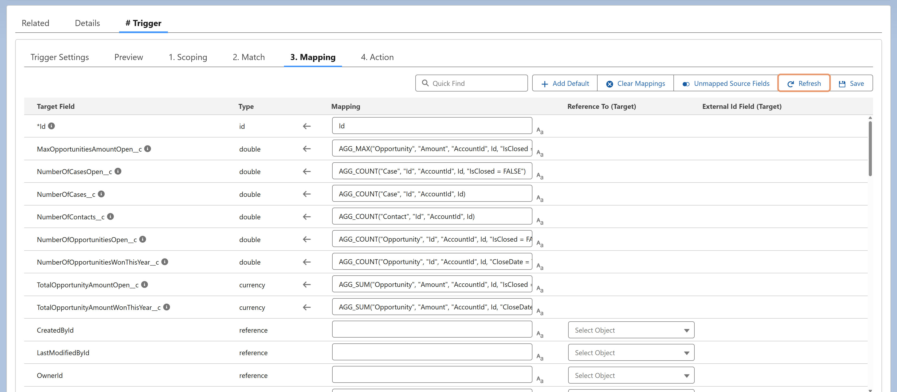

Refresh updates the Mapping section with the latest source and target fields, making any newly available fields ready to map.
It also re-sorts target fields into categories (Target Matching Field, Mapped Fields, Reference Fields, Non-Reference Fields), with mapped fields listed first and all fields sorted alphabetically for easier selection.
